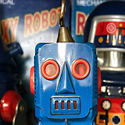
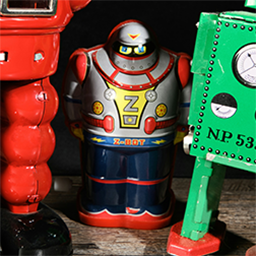

Vintage Robot Collection
Welcome to the Vintage Robot Collection — a nostalgic journey through the golden age of mechanical imagination. Here, we celebrate the iconic toy robots that captured the hearts of children and collectors alike from the 1950s through the 1970s. With blinking lights, whirring gears, and futuristic charm, these timeless machines stood as symbols of curiosity, creativity, and the dreams of space-age exploration. Each robot tells a story of innovation and wonder, crafted during a time when the idea of friendly mechanical companions felt just around the corner.
Whether you grew up marching your robot across the living room floor or you're discovering these retro marvels for the first time, this collection offers a glimpse into a world where tinplate heroes ruled and batteries brought playtime to life. Take a closer look at these mechanical legends — admire their craftsmanship, read about their histories, and relive the joy they sparked in countless imaginations. The future may be digital, but here, the past still hums with gears and glowing eyes.
| Vintage Robots | |
|---|---|
| AstroTron X-5 | |
|
Description: AstroTron X-5 is a gleaming chrome marvel straight from the retro-future of 1957. With articulated limbs, a dome-shaped head, and a red chest plate that lights up when it walks, this robot was the pride of many space-race-era toy shelves. It features a wind-up motor that sends it marching forward with a rhythmic clack, arms swinging and antennae twitching, as if scanning for alien life. AstroTron wasn't just a toy—it was a portable adventure into the unknown. |
|
| Year of Manufacture: 1957 | |
| MechaMax 3000 | |
|
 |
Description: MechaMax 3000 was the ultimate mechanical bodyguard for imaginative kids in the early 1960s. Standing tall in metallic blue with riveted joints and glowing yellow eyes, it came with interchangeable arm attachments—claw, blaster, and communicator—that made it ideal for play battles and mission simulations. It wasn’t just a robot—it was a whole team in one. |
| Year of Manufacture: 1962 | |
| Circuitron Scout | |
|
Description: Circuitron Scout was a fan favorite among collectors and kids alike for its striking red body, spinning radar dish, and clear chest panel revealing gears in motion. Designed for “planetary scouting,” its real charm was the satisfying hum it made when activated—giving it a sense of purpose and mystery. With tank treads instead of feet, it could traverse any kitchen terrain with ease. |
|
| Year of Manufacture: 1965 | |
| Volticon Zeta | |
|
 |
Description: Volticon Zeta brought a sleek, futuristic design to 1970s toy shelves with its reflective silver finish and jetpack-style back panel. It had a pop-out control panel in its torso and a light-up eye strip that would flicker during play. It felt less like a toy and more like a character from a Saturday morning cartoon, ready for diplomacy—or battle—in the robot republic. |
| Year of Manufacture: 1971 | |